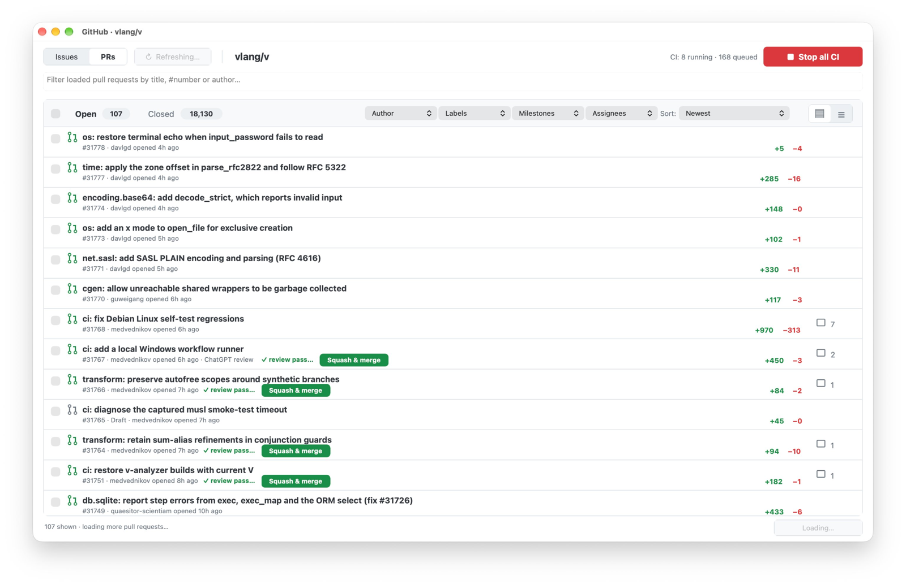

ghui is a fast desktop browser for GitHub issues and pull requests, written in V. Triage, review, and merge without a single browser tab.

Everything loads in the background, is stored locally in SQLite, and uses your existing GitHub CLI login — private repositories included.
Stored issues and PRs appear before GitHub responds. Rows load progressively, and sorting and filtering are local with no API calls.
Search by title, number or author, narrow by label, milestone and assignee, and sort by newest, activity, or comment count.
Read full diffs with colored additions and deletions, squash merge, close, or mark drafts ready for review right from the app.
Rich Markdown rendering, inline images, reactions with tooltips, and replying with ⌘↩ — all selectable and native.
See running and queued CI jobs for the repo and stop them all with one click when the queue gets out of hand.
Optionally open GitHub links from any Mac app inside ghui, falling back to your browser for everything else.
Requires V 0.5.2+, ui2, and the GitHub CLI.
v install https://github.com/vlang/ui2
gh auth login
git clone https://github.com/vlang/ghui
cd ghui
make
./ghgui vlang/vOn macOS, run make app to build Github.app, then make install-links to route GitHub links into it. Add --prs to start in PR mode.
Keep your hands on the keyboard.
| ⌘R / Ctrl+R / F5 | Refresh |
| ⌘F / Ctrl+F | Focus the filter |
| ⌘G / Ctrl+G | Open a pull request by number |
| ⌘↩ / Ctrl+Enter | Post comment |
| Esc | Back to the list |